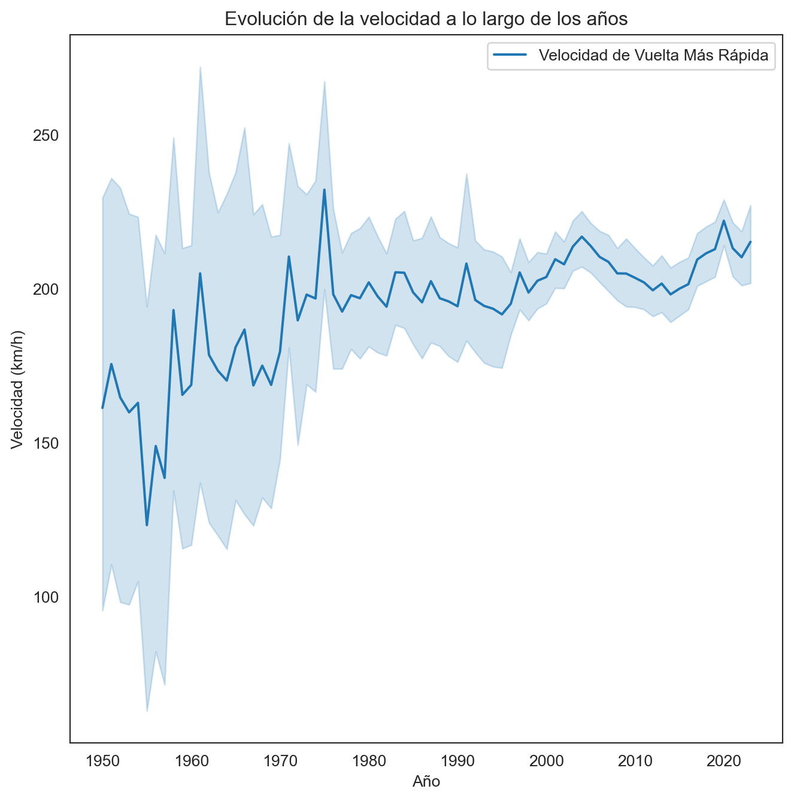

import pandas as pd
import psycopg2 as psy
from psycopg2 import Error
import numpy as np
from sklearn.experimental import enable_iterative_imputer
from sklearn.impute import IterativeImputer
import plotly.graph_objects as go
import plotly.express as px
import matplotlib.pyplot as plt
import seaborn as sns
sns.set_style('white')Campeonato Mundial de la Formula 1 (1950 - 2023)
Visualización Científica
La Fórmula 1, también conocida como F1, representa la cúspide de las carreras internacionales de monoplazas de ruedas abiertas, bajo la supervisión de la Federación Internacional del Automóvil (FIA). Desde su primera temporada en 1950, el Campeonato Mundial de Pilotos, rebautizado como el Campeonato Mundial de Fórmula 1 de la FIA en 1981, ha destacado como una de las principales competiciones a nivel global. La palabra “fórmula” en su nombre alude al conjunto de reglas que guían a todos los participantes en cuanto a la construcción y funcionamiento de los vehículos.
¿Qué haremos?
En esta sección, llevaremos a cabo un análisis exploratorio centrado en la tabla races, que abarca los datos de las carreras disputadas desde 1950 hasta 2023. Sin embargo, para llevar a cabo este análisis de manera integral, necesitamos consolidar información proveniente de diversas fuentes. Utilizaremos consultas para unificar los datos de la tabla races con aquellos de las tablas circuits (que contiene información sobre los circuitos donde se celebran las carreras de Fórmula 1), results (que proporciona los resultados de las carreras) y lap_times (los tiempos registrados por vuelta).
Es fundamental destacar que, para la tabla results nos enfocaremos exclusivamente en los datos del ganador de cada carrera. Asimismo, de la tabla lap_time, extraeremos únicamente la información correspondiente a la vuelta más rápida registrada.
Librerías
Para este proyecto trabajaremos con las siguientes librerías:
- Pandas
- Psycopg2
- Plotly
- Matplotlib
- Seaborn
- Scikit-learn
Pueden instalarse utilizando el siguiente comando desde la terminal: pip install pandas psycopg2 plotly..., o bien, mediante el archivo requirements.txt utilizando pip install -r requirements.txt en la terminal.
Una vez instaladas, podemos importarlas en nuestro entorno de trabajo de la siguiente manera:
Además, haremos uso de la siguiente función para evitar la repetición de código y facilitar la conexión a la base de datos:
def connection_db() -> psy.extensions.connection:
try:
conn = psy.connect(DATABASE_URL)
return conn
except (Exception, Error) as e:
print('Error while connecting to PostgreSQL', e)Es importante destacar que en esta función, obtenemos una variable de entorno que almacena los datos de conexión a la base de datos. En este caso, estamos utilizando Neon que nos permite crear un servidor de bases de datos con PostgreSQL.
Obtención de los datos
Veamos inicialmente las columnas que tenemos para cada una de las tablas mencionadas.
Tabla races
try:
connection = connection_db()
cursor = connection.cursor()
cursor.execute(
"""
SELECT *
FROM races
LIMIT 5;
"""
)
records = cursor.fetchall()
records_data = pd.DataFrame(records)
columns = []
for column in cursor.description:
columns.append(column[0])
records_data.columns = columns
display(records_data)
except (Exception, Error) as e:
print('Error while executing the query', e)
finally:
if(connection):
cursor.close()
connection.close()| raceid | year | round | circuitid | name | date | time | url | fp1_date | fp1_time | fp2_date | fp2_time | fp3_date | fp3_time | quali_date | quali_time | sprint_date | sprint_time | |
|---|---|---|---|---|---|---|---|---|---|---|---|---|---|---|---|---|---|---|
| 0 | 1 | 2009 | 1 | 1 | Australian Grand Prix | 2009-03-29 | 06:00:00 | http://en.wikipedia.org/wiki/2009_Australian_G... | None | None | None | None | None | None | None | None | None | None |
| 1 | 2 | 2009 | 2 | 2 | Malaysian Grand Prix | 2009-04-05 | 09:00:00 | http://en.wikipedia.org/wiki/2009_Malaysian_Gr... | None | None | None | None | None | None | None | None | None | None |
| 2 | 3 | 2009 | 3 | 17 | Chinese Grand Prix | 2009-04-19 | 07:00:00 | http://en.wikipedia.org/wiki/2009_Chinese_Gran... | None | None | None | None | None | None | None | None | None | None |
| 3 | 4 | 2009 | 4 | 3 | Bahrain Grand Prix | 2009-04-26 | 12:00:00 | http://en.wikipedia.org/wiki/2009_Bahrain_Gran... | None | None | None | None | None | None | None | None | None | None |
| 4 | 5 | 2009 | 5 | 4 | Spanish Grand Prix | 2009-05-10 | 12:00:00 | http://en.wikipedia.org/wiki/2009_Spanish_Gran... | None | None | None | None | None | None | None | None | None | None |
Tabla circuits
try:
connection = connection_db()
cursor = connection.cursor()
cursor.execute(
"""
SELECT *
FROM circuits
LIMIT 5;
"""
)
records = cursor.fetchall()
records_data = pd.DataFrame(records)
columns = []
for column in cursor.description:
columns.append(column[0])
records_data.columns = columns
display(records_data)
except (Exception, Error) as e:
print('Error while executing the query', e)
finally:
if(connection):
cursor.close()
connection.close()| circuitid | circuitref | name | location | country | lat | lng | alt | url | |
|---|---|---|---|---|---|---|---|---|---|
| 0 | 1 | albert_park | Albert Park Grand Prix Circuit | Melbourne | Australia | -37.8497 | 144.968 | 10 | http://en.wikipedia.org/wiki/Melbourne_Grand_P... |
| 1 | 2 | sepang | Sepang International Circuit | Kuala Lumpur | Malaysia | 2.76083 | 101.738 | 18 | http://en.wikipedia.org/wiki/Sepang_Internatio... |
| 2 | 3 | bahrain | Bahrain International Circuit | Sakhir | Bahrain | 26.0325 | 50.5106 | 7 | http://en.wikipedia.org/wiki/Bahrain_Internati... |
| 3 | 4 | catalunya | Circuit de Barcelona-Catalunya | Montmeló | Spain | 41.57 | 2.26111 | 109 | http://en.wikipedia.org/wiki/Circuit_de_Barcel... |
| 4 | 5 | istanbul | Istanbul Park | Istanbul | Turkey | 40.9517 | 29.405 | 130 | http://en.wikipedia.org/wiki/Istanbul_Park |
Tabla results
try:
connection = connection_db()
cursor = connection.cursor()
cursor.execute(
"""
SELECT *
FROM results
LIMIT 5;
"""
)
records = cursor.fetchall()
records_data = pd.DataFrame(records)
columns = []
for column in cursor.description:
columns.append(column[0])
records_data.columns = columns
display(records_data)
except (Exception, Error) as e:
print('Error while executing the query', e)
finally:
if(connection):
cursor.close()
connection.close()| resultid | raceid | driverid | constructorid | number | grid | position | positiontext | positionorder | points | laps | time | milliseconds | fastestlap | rank | fastestlaptime | fastestlapspeed | statusid | |
|---|---|---|---|---|---|---|---|---|---|---|---|---|---|---|---|---|---|---|
| 0 | 1 | 18 | 1 | 1 | 22 | 1 | 1 | 1 | 1 | 10 | 58 | 1:34:50.616 | 5690616 | 39 | 2 | 1:27.452 | 218.300 | 1 |
| 1 | 2 | 18 | 2 | 2 | 3 | 5 | 2 | 2 | 2 | 8 | 58 | +5.478 | 5696094 | 41 | 3 | 1:27.739 | 217.586 | 1 |
| 2 | 3 | 18 | 3 | 3 | 7 | 7 | 3 | 3 | 3 | 6 | 58 | +8.163 | 5698779 | 41 | 5 | 1:28.090 | 216.719 | 1 |
| 3 | 4 | 18 | 4 | 4 | 5 | 11 | 4 | 4 | 4 | 5 | 58 | +17.181 | 5707797 | 58 | 7 | 1:28.603 | 215.464 | 1 |
| 4 | 5 | 18 | 5 | 1 | 23 | 3 | 5 | 5 | 5 | 4 | 58 | +18.014 | 5708630 | 43 | 1 | 1:27.418 | 218.385 | 1 |
Tabla lap_times
try:
connection = connection_db()
cursor = connection.cursor()
cursor.execute(
"""
SELECT *
FROM lap_times
LIMIT 5;
"""
)
records = cursor.fetchall()
records_data = pd.DataFrame(records)
columns = []
for column in cursor.description:
columns.append(column[0])
records_data.columns = columns
display(records_data)
except (Exception, Error) as e:
print('Error while executing the query', e)
finally:
if(connection):
cursor.close()
connection.close()| raceid | driverid | lap | position | time | milliseconds | |
|---|---|---|---|---|---|---|
| 0 | 841 | 20 | 1 | 1 | 1:38.109 | 98109 |
| 1 | 841 | 20 | 2 | 1 | 1:33.006 | 93006 |
| 2 | 841 | 20 | 3 | 1 | 1:32.713 | 92713 |
| 3 | 841 | 20 | 4 | 1 | 1:32.803 | 92803 |
| 4 | 841 | 20 | 5 | 1 | 1:32.342 | 92342 |
Tabla final
Con base en las columnas proporcionadas de cada tabla, podemos listar las que se utilizarán en el análisis de la siguiente manera:
- Races: raceId, year, round, circuitId, name, time.
- Circuits: circuit_ref, name, location, country, lat, lng.
- Results: driverId, constructorId, points, grid, laps, milliseconds, fastestlap, rank, fastestlapspeed.
- Lap Times: lap, miliseconds.
Realicemos entonces la consulta a la base de datos para obtener esta tabla.
try:
connection = connection_db()
cursor = connection.cursor()
cursor.execute(
"""
SELECT
r.raceId, r.year, r.round, r.circuitId, r.name AS race_name,
c.circuitref, c.name AS circuit_name, c.location AS circuit_location, c.country AS circuit_country,
c.lat AS circuit_lat, c.lng AS circuit_lng,
re.driverId, re.constructorId, re.points, re.grid, re.laps, re.milliseconds as race_time_in_milliseconds,
re.fastestlap AS winner_fastest_lap, re.rank as winner_lap_rank, re.fastestlapspeed as winner_fastestlapspeed,
l.lap as general_fastest_lap, l.milliseconds AS general_fastest_lap_time
FROM races AS r
JOIN circuits AS c ON r.circuitId = c.circuitId
JOIN (
SELECT raceId, driverId, constructorId, points, grid, laps, milliseconds, fastestlap, rank, fastestlapspeed
FROM results
WHERE positionOrder = 1
) AS re ON r.raceId = re.raceId
LEFT JOIN (
SELECT lt.raceId, lt.lap, lt.milliseconds
FROM lap_times lt
JOIN (
SELECT raceId, MIN(milliseconds) AS min_milliseconds
FROM lap_times
GROUP BY raceId
) AS min_lap_times ON lt.raceId = min_lap_times.raceId AND lt.milliseconds = min_lap_times.min_milliseconds
) AS l ON r.raceId = l.raceId;
"""
)
records = cursor.fetchall()
records_data = pd.DataFrame(records)
columns = []
for column in cursor.description:
columns.append(column[0])
records_data.columns = columns
display(records_data.head())
except (Exception, Error) as e:
print('Error while executing the query', e)
finally:
if(connection):
cursor.close()
connection.close()| raceid | year | round | circuitid | race_name | circuitref | circuit_name | circuit_location | circuit_country | circuit_lat | ... | constructorid | points | grid | laps | race_time_in_milliseconds | winner_fastest_lap | winner_lap_rank | winner_fastestlapspeed | general_fastest_lap | general_fastest_lap_time | |
|---|---|---|---|---|---|---|---|---|---|---|---|---|---|---|---|---|---|---|---|---|---|
| 0 | 18 | 2008 | 1 | 1 | Australian Grand Prix | albert_park | Albert Park Grand Prix Circuit | Melbourne | Australia | -37.8497 | ... | 1 | 10 | 1 | 58 | 5690616 | 39.0 | 2.0 | 218.300 | 43.0 | 87418.0 |
| 1 | 19 | 2008 | 2 | 2 | Malaysian Grand Prix | sepang | Sepang International Circuit | Kuala Lumpur | Malaysia | 2.76083 | ... | 6 | 10 | 2 | 56 | 5478555 | 37.0 | 2.0 | 209.158 | 55.0 | 95366.0 |
| 2 | 20 | 2008 | 3 | 3 | Bahrain Grand Prix | bahrain | Bahrain International Circuit | Sakhir | Bahrain | 26.0325 | ... | 6 | 10 | 2 | 57 | 5466970 | 38.0 | 3.0 | 208.153 | 49.0 | 93193.0 |
| 3 | 21 | 2008 | 4 | 4 | Spanish Grand Prix | catalunya | Circuit de Barcelona-Catalunya | Montmeló | Spain | 41.57 | ... | 6 | 10 | 1 | 66 | 5899051 | 46.0 | 1.0 | 205.191 | 46.0 | 81670.0 |
| 4 | 22 | 2008 | 5 | 5 | Turkish Grand Prix | istanbul | Istanbul Park | Istanbul | Turkey | 40.9517 | ... | 6 | 10 | 1 | 58 | 5209451 | 16.0 | 3.0 | 221.734 | 20.0 | 86506.0 |
5 rows × 22 columns
Análisis exploratorio de datos
En esta sección nos sumergiremos en la comprensión de los datos disponibles, exploraremos los tipos de variables presentes, calcularemos medidas de tendencia central, llevaremos a cabo la depuración de los datos y procederemos a su visualización.
Para llevar a cabo este análisis, nos apoyaremos en el marco de trabajo establecido, APP Framework.
- Atención: Entender el conjunto de datos.
- Propósito: Establecer objetivos claros.
- Proceso: Realizar el Análisis Exploratorio de Datos (EDA) propiamente dicho.
- Beneficio: Extraer y aplicar los resultados obtenidos.
Conociendo los datos
Conocer los datos es un paso fundamental en cualquier análisis. Proporciona una comprensión inicial del problema, permite validar la calidad de los datos, seleccionar características relevantes, preparar los datos adecuadamente y generar ideas y hipótesis. En resumen, la exploración inicial de los datos sienta las bases para un análisis más profundo y asegura que los resultados sean significativos y confiables.
Tipos de datos
Para realizar un análisis exploratorio, primero debes conocer el tipo de variables con las que estamos tratando. Conocer si tenemos variables numéricas o categóricas podrían determinar el rumbo del análisis que realizaremos.
records_data.dtypesraceid int64
year int64
round int64
circuitid int64
race_name object
circuitref object
circuit_name object
circuit_location object
circuit_country object
circuit_lat object
circuit_lng object
driverid int64
constructorid int64
points int64
grid int64
laps int64
race_time_in_milliseconds int64
winner_fastest_lap float64
winner_lap_rank float64
winner_fastestlapspeed object
general_fastest_lap float64
general_fastest_lap_time float64
dtype: objectObservemos que todas las variables tienen el tipo de dato correcto, excepto la columna winner_fastestlapspeed, que toma valores numéricos pero está siendo interpretada como un dato tipo object. Por lo tanto, es necesario convertir esta columna en tipo numérico. Además, vamos a cambiar los tipos de datos de las variables raceid, round, circuitid, driverid y constructorid a tipo object.
records_data['winner_fastestlapspeed'] = pd.to_numeric(records_data['winner_fastestlapspeed'])
records_data[['raceid', 'round', 'circuitid', 'driverid', 'constructorid']] = records_data[['raceid', 'round', 'circuitid', 'driverid', 'constructorid']].astype('object')
records_data.dtypesraceid object
year int64
round object
circuitid object
race_name object
circuitref object
circuit_name object
circuit_location object
circuit_country object
circuit_lat object
circuit_lng object
driverid object
constructorid object
points int64
grid int64
laps int64
race_time_in_milliseconds int64
winner_fastest_lap float64
winner_lap_rank float64
winner_fastestlapspeed float64
general_fastest_lap float64
general_fastest_lap_time float64
dtype: objectDimensiones de los registros
Determinar el tamaño de nuestros registros es fundamental, ya que nos permite comprender la magnitud de la información que estamos manejando. Esto a su vez nos ayuda a establecer posibles caminos a seguir en caso de realizar transformaciones y análisis adicionales.
records_data.shape(1094, 22)Esto indica que desde el año 1950 hasta el 2023 se llevaron a cabo más de 1000 carreras, lo que significa que estamos trabajando con una cantidad considerable de datos sobre carreras.
Datos faltantes
Determinar la presencia de datos faltantes es crucial, ya que puede indicar si podemos confiar en una columna para el análisis o si necesitamos tomar medidas para imputar esos valores ausentes.
records_data.isnull().sum()raceid 0
year 0
round 0
circuitid 0
race_name 0
circuitref 0
circuit_name 0
circuit_location 0
circuit_country 0
circuit_lat 0
circuit_lng 0
driverid 0
constructorid 0
points 0
grid 0
laps 0
race_time_in_milliseconds 0
winner_fastest_lap 717
winner_lap_rank 716
winner_fastestlapspeed 717
general_fastest_lap 584
general_fastest_lap_time 584
dtype: int64Con los resultados obtenidos, observamos que tenemos una cantidad significativa de datos faltantes. Esta situación puede afectar los análisis futuros, dependiendo del tipo de variable que estemos considerando. Es importante determinar un método adecuado para la imputación de datos en caso de que sea necesario. Veamos el porcentaje que representa esta cantidad de datos faltantes en el total de nuestros datos.
missing_values = records_data.isnull().sum()
missing_percentage = round((missing_values / len(records_data)) * 100, 4)
missing_percentageraceid 0.0000
year 0.0000
round 0.0000
circuitid 0.0000
race_name 0.0000
circuitref 0.0000
circuit_name 0.0000
circuit_location 0.0000
circuit_country 0.0000
circuit_lat 0.0000
circuit_lng 0.0000
driverid 0.0000
constructorid 0.0000
points 0.0000
grid 0.0000
laps 0.0000
race_time_in_milliseconds 0.0000
winner_fastest_lap 65.5393
winner_lap_rank 65.4479
winner_fastestlapspeed 65.5393
general_fastest_lap 53.3821
general_fastest_lap_time 53.3821
dtype: float64Tenemos un gran porcentaje de datos faltantes en nuestras variables. Sin embargo, estos datos faltantes parecen estar concentrados en las variables relacionadas con medidas de tiempos y velocidades. Esto sugiere que estos datos podrían faltar debido a limitaciones técnicas o falta de registro en las fechas más antiguas, donde la toma de estas medidas podría no haber sido sistemática.
Para comprender mejor la distribución de estos datos faltantes, examinemos en qué fechas están ocurriendo y verifiquemos la fecha máxima y mínima en la que faltan estas observaciones.
records_data[records_data.isnull().any(axis = 1)]| raceid | year | round | circuitid | race_name | circuitref | circuit_name | circuit_location | circuit_country | circuit_lat | ... | constructorid | points | grid | laps | race_time_in_milliseconds | winner_fastest_lap | winner_lap_rank | winner_fastestlapspeed | general_fastest_lap | general_fastest_lap_time | |
|---|---|---|---|---|---|---|---|---|---|---|---|---|---|---|---|---|---|---|---|---|---|
| 90 | 108 | 2003 | 1 | 1 | Australian Grand Prix | albert_park | Albert Park Grand Prix Circuit | Melbourne | Australia | -37.8497 | ... | 1 | 10 | 11 | 58 | 5682100 | NaN | NaN | NaN | 32.0 | 87724.0 |
| 91 | 109 | 2003 | 2 | 2 | Malaysian Grand Prix | sepang | Sepang International Circuit | Kuala Lumpur | Malaysia | 2.76083 | ... | 1 | 10 | 7 | 56 | 5542195 | NaN | NaN | NaN | 45.0 | 96412.0 |
| 92 | 110 | 2003 | 3 | 18 | Brazilian Grand Prix | interlagos | Autódromo José Carlos Pace | São Paulo | Brazil | -23.7036 | ... | 17 | 10 | 8 | 54 | 5478200 | NaN | NaN | NaN | 46.0 | 82032.0 |
| 93 | 111 | 2003 | 4 | 21 | San Marino Grand Prix | imola | Autodromo Enzo e Dino Ferrari | Imola | Italy | 44.3439 | ... | 6 | 10 | 1 | 62 | 5292058 | NaN | NaN | NaN | 17.0 | 82491.0 |
| 94 | 112 | 2003 | 5 | 4 | Spanish Grand Prix | catalunya | Circuit de Barcelona-Catalunya | Montmeló | Spain | 41.57 | ... | 6 | 10 | 1 | 65 | 5626933 | NaN | NaN | NaN | 52.0 | 80143.0 |
| ... | ... | ... | ... | ... | ... | ... | ... | ... | ... | ... | ... | ... | ... | ... | ... | ... | ... | ... | ... | ... | ... |
| 819 | 828 | 1951 | 4 | 55 | French Grand Prix | reims | Reims-Gueux | Reims | France | 49.2542 | ... | 51 | 5 | 7 | 77 | 12131000 | NaN | NaN | NaN | NaN | NaN |
| 820 | 784 | 1956 | 1 | 25 | Argentine Grand Prix | galvez | Autódromo Juan y Oscar Gálvez | Buenos Aires | Argentina | -34.6943 | ... | 6 | 5 | 3 | 98 | 10803700 | NaN | NaN | NaN | NaN | NaN |
| 821 | 780 | 1957 | 5 | 58 | British Grand Prix | aintree | Aintree | Liverpool | UK | 53.4769 | ... | 118 | 5 | 3 | 90 | 11197800 | NaN | NaN | NaN | NaN | NaN |
| 822 | 728 | 1963 | 10 | 56 | South African Grand Prix | george | Prince George Circuit | Eastern Cape Province | South Africa | -33.0486 | ... | 172 | 9 | 1 | 85 | 7836900 | NaN | NaN | NaN | NaN | NaN |
| 1049 | 1063 | 2021 | 12 | 13 | Belgian Grand Prix | spa | Circuit de Spa-Francorchamps | Spa | Belgium | 50.4372 | ... | 9 | 13 | 1 | 1 | 207071 | NaN | 0.0 | NaN | 1.0 | 207071.0 |
717 rows × 22 columns
Fecha mínima: 1950
Fecha promedio: 1980
Fecha máxima: 2021Observando estos resultados, podemos confirmar nuestra teoría. Estos registros faltantes pueden ser debidos a limitaciones técnicas en aquellos tiempos. Sin embargo, también tenemos datos faltantes recientes.
Exploración de los datos
En esta sección realizaremos el verdadero análisis exploratorio de nuestros datos. Abordaremos los siguientes aspectos:
Medidas de tendencia central: Calcularemos medidas como la media, la mediana y la moda para entender mejor la distribución de nuestros datos.
Limpieza de los datos: Abordaremos la limpieza de nuestros datos, incluyendo la búsqueda de datos atípicos.
Transformación: Determinaremos si es necesario aplicar alguna transformación a nuestros datos para facilitar los análisis subsiguientes.
Visualización: Utilizaremos herramientas gráficas para explorar el comportamiento de nuestros datos y extraer patrones o tendencias.
Esta fase nos permitirá comprender mejor la naturaleza de nuestros datos y prepararlos adecuadamente para análisis más avanzados.
Medidas de tendencia central
records_data.describe()| year | points | grid | laps | race_time_in_milliseconds | winner_fastest_lap | winner_lap_rank | winner_fastestlapspeed | general_fastest_lap | general_fastest_lap_time | |
|---|---|---|---|---|---|---|---|---|---|---|
| count | 1094.000000 | 1094.000000 | 1094.000000 | 1094.000000 | 1.094000e+03 | 377.000000 | 378.000000 | 377.000000 | 510.000000 | 510.000000 |
| mean | 1991.635283 | 13.200183 | 2.710238 | 64.812614 | 6.390212e+06 | 44.297082 | 2.695767 | 207.944472 | 45.986275 | 88098.447059 |
| std | 20.236151 | 6.952141 | 2.657508 | 20.397213 | 1.657215e+06 | 15.989751 | 1.935302 | 20.773775 | 16.101282 | 12714.556207 |
| min | 1950.000000 | 4.000000 | 1.000000 | 1.000000 | 2.070710e+05 | 5.000000 | 0.000000 | 151.388000 | 1.000000 | 55404.000000 |
| 25% | 1976.000000 | 9.000000 | 1.000000 | 54.000000 | 5.445916e+06 | 36.000000 | 1.000000 | 197.014000 | 36.000000 | 78443.000000 |
| 50% | 1993.000000 | 10.000000 | 2.000000 | 65.000000 | 5.905204e+06 | 47.000000 | 2.000000 | 208.314000 | 49.000000 | 86233.500000 |
| 75% | 2009.000000 | 10.000000 | 3.000000 | 73.000000 | 6.805843e+06 | 55.000000 | 4.000000 | 220.782000 | 56.000000 | 96421.000000 |
| max | 2023.000000 | 50.000000 | 22.000000 | 200.000000 | 1.467954e+07 | 78.000000 | 14.000000 | 257.320000 | 80.000000 | 207071.000000 |
Estos resultados nos pueden permitir concluir lo siguiente:
Puntos, posición en la parrilla y número de vueltas: La distribución de puntos obtenidos, la posición en la parrilla de salida y el número de vueltas varían ampliamente entre las carreras. Esto puede reflejar diferencias en la dificultad de los circuitos, la calidad de los vehículos y la estrategia de los equipos en cada evento específico.
Tiempo de carrera y velocidad: El tiempo medio de carrera es de aproximadamente 106 minutos, pero con una variabilidad significativa. lo que puede ser atribuible a factores como la longitud del circuito, condiciones climáticas y la cantidad de incidentes en la pista. La velocidad media de la vuelta más rápida realizada por el ganador es de alrededor de 207.94 km/h, lo que también puede variar según las características específicas del circuito y la competencia entre los conductores.
Limpieza de los datos
La limpieza de datos es una etapa crucial en cualquier análisis, por lo que en este apartado trataremos los datos faltantes y observaremos si existen datos atípicos en nuestras variables.
Datos faltantes
Existen diversas estrategias para abordar este problema. Usualmente, en este tipo de análisis se recurre a la imputación de valores faltantes utilizando la media, moda o mediana, o llenando los datos con los valores anteriores o siguientes. Sin embargo, estas técnicas pueden no ser óptimas para conjuntos de datos extensos o con características específicas.
En nuestro caso, una estrategia efectiva sería utilizar la imputación de datos faltantes basada en puntos similares en los datos mediante el algoritmo KNN (K-Nearest Neighbors) y Random Forest Classification. Este método considera las características de observaciones similares para estimar los valores faltantes de manera más precisa y realista, lo que resulta especialmente útil en conjuntos de datos complejos como el nuestro.
Inicialmente, creemos un DataFrame temporal donde estarán los mismos datos de records_data pero sin las columnas correspondientes a tipo object.
temp_df = records_data.select_dtypes(exclude=['object'])
imputer = IterativeImputer(min_value=0, max_iter=30, imputation_order='roman', random_state=1)
imputed_data = imputer.fit_transform(temp_df)
temp_df_imputed = pd.DataFrame(imputed_data, columns=temp_df.columns)
temp_df_imputed.isnull().sum()year 0
points 0
grid 0
laps 0
race_time_in_milliseconds 0
winner_fastest_lap 0
winner_lap_rank 0
winner_fastestlapspeed 0
general_fastest_lap 0
general_fastest_lap_time 0
dtype: int64Bien, ya no tenemos datos faltantes. Ahora, verifiquemos si los resultados obtenidos en las medidas de tendencia central del DataFrame original cambiaron significativamente.
temp_df_imputed.describe()| year | points | grid | laps | race_time_in_milliseconds | winner_fastest_lap | winner_lap_rank | winner_fastestlapspeed | general_fastest_lap | general_fastest_lap_time | |
|---|---|---|---|---|---|---|---|---|---|---|
| count | 1094.000000 | 1094.000000 | 1094.000000 | 1094.000000 | 1.094000e+03 | 1094.000000 | 1094.000000 | 1094.000000 | 1094.000000 | 1094.000000 |
| mean | 1991.635283 | 13.200183 | 2.710238 | 64.812614 | 6.390212e+06 | 41.198089 | 2.388976 | 197.487624 | 43.406781 | 87917.959131 |
| std | 20.236151 | 6.952141 | 2.657508 | 20.397213 | 1.657215e+06 | 13.042462 | 1.212770 | 51.466986 | 14.678942 | 8687.161576 |
| min | 1950.000000 | 4.000000 | 1.000000 | 1.000000 | 2.070710e+05 | 4.442446 | 0.000000 | 0.000000 | 1.000000 | 55404.000000 |
| 25% | 1976.000000 | 9.000000 | 1.000000 | 54.000000 | 5.445916e+06 | 34.248065 | 2.000000 | 170.246741 | 34.155086 | 86470.178618 |
| 50% | 1993.000000 | 10.000000 | 2.000000 | 65.000000 | 5.905204e+06 | 41.206371 | 2.220656 | 202.165329 | 44.429436 | 87882.189112 |
| 75% | 2009.000000 | 10.000000 | 3.000000 | 73.000000 | 6.805843e+06 | 48.000000 | 2.584096 | 223.148500 | 51.635757 | 88294.173027 |
| max | 2023.000000 | 50.000000 | 22.000000 | 200.000000 | 1.467954e+07 | 97.874592 | 14.000000 | 368.033143 | 96.392282 | 207071.000000 |
Comparando los resultados de las medidas de tendencia central antes y después de la imputación de datos con el algoritmo KNN, observamos algunas diferencias significativas en ciertas variables:
Puntos, posición en la parrilla y número de vueltas: No hubo cambios notables en estas variables, lo que indica que la imputación de datos no tuvo un impacto significativo en su distribución.
Tiempo de carrera y velocidad: La media del tiempo de carrera disminuyó ligeramente después de la imputación de datos, lo que sugiere que los nuevos valores imputados pueden haber afectado este aspecto. Por otro lado, la velocidad media de la vuelta más rápida realizada por el ganador experimentó una disminución significativa en su media y desviación estándar, lo que indica que la imputación de datos pudo haber tenido un impacto más notable en esta variable.
Ahora que hemos realizado la imputación de datos, pasemos estos datos a nuestro dataframe original.
records_data[temp_df.columns] = temp_df_imputed
records_data.isnull().sum()raceid 0
year 0
round 0
circuitid 0
race_name 0
circuitref 0
circuit_name 0
circuit_location 0
circuit_country 0
circuit_lat 0
circuit_lng 0
driverid 0
constructorid 0
points 0
grid 0
laps 0
race_time_in_milliseconds 0
winner_fastest_lap 0
winner_lap_rank 0
winner_fastestlapspeed 0
general_fastest_lap 0
general_fastest_lap_time 0
dtype: int64Datos atípicos
Veamos ahora si existen datos atípicos en nuestro registro. En este caso, utilizaremos el rango intercuartílico (IQR) para identificar los valores atípicos. Si un valor cae por debajo de Q1 - 1.5 * IQR o por encima de Q3 + 1.5 * IQR, se considera un valor atípico.
numeric_columns = temp_df.columns
for col in numeric_columns:
q1 = records_data[col].quantile(0.25)
q3 = records_data[col].quantile(0.75)
iqr = q3 - q1
lower_bound = q1 - 1.5 * iqr
upper_bound = q3 + 1.5 * iqr
outliers = records_data[(records_data[col] < lower_bound) | (records_data[col] > upper_bound)]
n_outliers = len(outliers)
print(f'#Outliers in {col} are {n_outliers} and represent a {round(n_outliers/len(records_data) * 100, 4)}% of total records')#Outliers in year are 0 and represent a 0.0% of total records
#Outliers in points are 282 and represent a 25.777% of total records
#Outliers in grid are 84 and represent a 7.6782% of total records
#Outliers in laps are 47 and represent a 4.2962% of total records
#Outliers in race_time_in_milliseconds are 94 and represent a 8.5923% of total records
#Outliers in winner_fastest_lap are 48 and represent a 4.3876% of total records
#Outliers in winner_lap_rank are 234 and represent a 21.3894% of total records
#Outliers in winner_fastestlapspeed are 78 and represent a 7.1298% of total records
#Outliers in general_fastest_lap are 17 and represent a 1.5539% of total records
#Outliers in general_fastest_lap_time are 412 and represent a 37.66% of total recordsComo podemos observar, tenemos una cantidad significativa de datos atípicos en algunas de nuestras variables. Esto podría afectar más adelante en los modelos estadísticos que querramos implementar. Veamos gráficamente qué es lo que está ocurriendo con ellos.
Realizaremos un gráfico de caja y bigotes e histogramas para ver el comportamiento y la distribución de nuestros datos.
plt.figure(figsize=(9,12))
i = 1
for col in numeric_columns:
plt.subplot(5,3,i)
plt.boxplot(records_data[col],whis=1.5)
plt.title(col)
i += 1
plt.show()plt.figure(figsize=(8,12))
i = 1
for col in numeric_columns:
plt.subplot(5, 3, i)
sns.histplot(records_data[col], kde=True)
plt.title(col)
i += 1
plt.tight_layout()
plt.show()Dada la naturaleza de las variables, en algunos casos como rank, lap, grid, points, que son datos numéricos discretos y representan una categoría específica, es normal que existan datos atípicos. Por otro lado, para las otras variables en nuestra base de datos, estos datos atípicos no están afectando mucho la distribución de cada una de ellas, por lo tanto, no realizaremos cambios en ellas.
Visualización
La visualización es uno de los puntos más importantes a la hora de realizar una exploración de los datos. Con ella, no solo podemos encontrar las relaciones que existen entre nuestras variables, sino que también podemos representar gráficamente las informaciones más relevantes de los datos.
Comencemos visualizando los gráficos de correlación y dispersión entre las variables para comprender mejor sus relaciones y encontrar posibles patrones.
Gráfico de correlación
corr = records_data[numeric_columns].corr()
mask = np.triu(np.ones_like(corr, dtype=bool))
sns.heatmap(corr, annot=True, cmap='PRGn', square=True, center=0, mask=mask)Como podemos observar, las variables con una alta correlación (>0.5 o <-0.5) son aquellas que están relacionadas entre sí, como laps, winner_fastestlapspeed, general_fastest_lap, entre otras. Por lo tanto, esto no debería ser un problema y podemos proseguir con la exploración de los datos.
Gráfico de dispersión
numeric_columns = numeric_columns.drop(['points', 'winner_lap_rank'])
plt.figure(figsize=(8, 12))
sns.pairplot(records_data[numeric_columns])
plt.show()<Figure size 768x1152 with 0 Axes>De este gráfico podemos notar que a medida que pasan los años, la competencia ha evolucionado en términos de velocidades y tiempos de carreras obtenidos. La velocidad ha aumentado, lo que indica una mejora en los automóviles, y afecta directamente la duración de las carreras. Sin embargo, estos cambios en las velocidades y tiempos de carrera también se han vuelto más dispersos a lo largo de los años, lo que implica que ha habido una gran diferencia entre los equipos constructores. Además, también podemos observar algunas relaciones proporcionales en nuestras variables, como aquellas relacionadas nuevamente con las velocidades y tiempos.
Distribución de tiempos de vuelta por décadas
Veamos cómo se distribuyen en cada una de las vueltas a lo largo de los años.
records_data['race_time_in_seconds'] = records_data['race_time_in_milliseconds'] / 1000
records_data['decade'] = records_data['year'].apply(lambda x: int(np.floor(x / 10) * 10))
plt.figure(figsize=(8, 8))
sns.boxplot(x='decade', y='race_time_in_seconds', data=records_data, palette="PRGn", hue='decade', legend=False)
plt.title('Distribución de duración de carreras por década')
plt.xlabel('Década')
plt.ylabel('Duración de Carreras (segundos)')
plt.xticks(rotation=45)
plt.tight_layout()
plt.show()Se destaca una clara tendencia hacia la reducción de los tiempos de vuelta con cada década sucesiva, lo que refleja los avances en la tecnología automotriz y la eficiencia aerodinámica. Esta mejora continua se evidencia en la reducción de la dispersión de los boxplots en décadas más recientes, especialmente en los años 2020, lo que sugiere una menor variabilidad y una mayor consistencia en el rendimiento de los pilotos y los vehículos.
Además, la presencia de valores atípicos en los datos indica la ocurrencia de carreras con condiciones anómalas o extraordinarias, como cambios climáticos extremos o incidentes en la pista que han impactado significativamente en los tiempos de vuelta. Este análisis revela tanto la evolución constante de las capacidades tecnológicas como la influencia de factores externos en el rendimiento en pista.
Número de premios celebrados por país
races_per_country = records_data['circuit_country'].value_counts()
plt.figure(figsize=(8, 8))
sns.barplot(x=races_per_country.values, y=races_per_country.index)
plt.title('Número de premios celebrados por país')
plt.xlabel('Número de Premios')
plt.ylabel('País')
plt.show()El histograma presenta la distribución del número de Grandes Premios de Fórmula 1 celebrados por país. Italia lidera la lista, seguida por el Reino Unido (UK) y Alemania, lo que sugiere su arraigada tradición y su papel significativo en la historia del automovilismo. La prominencia de naciones europeas en la parte superior del gráfico refleja la influencia y la popularidad de la Fórmula 1 en Europa.
Por otro lado, países como Qatar y Marruecos muestran un número relativamente bajo de eventos, lo que podría indicar una incorporación más reciente al calendario de la F1 o una frecuencia de carreras menos habitual. La variación en el número de premios por país puede estar influenciada por varios factores, como el interés local en el automovilismo, la infraestructura disponible para albergar eventos de este nivel y la historia del deporte en la región.
Evolución de la velocidad
plt.figure(figsize=(8, 8))
sns.lineplot(x='year', y='winner_fastestlapspeed', data=records_data, label='Velocidad de Vuelta Más Rápida')
plt.title('Evolución de la velocidad a lo largo de los años')
plt.xlabel('Año')
plt.ylabel('Velocidad (km/h)')
plt.legend()
plt.show()
El gráfico presenta la evolución de la velocidad de la vuelta más rápida en la Fórmula 1 a lo largo de los años. Se observan fluctuaciones en la velocidad a lo largo del tiempo, con una tendencia general al aumento, especialmente notoria a partir de 2015. La sombra alrededor de la línea indica la variabilidad en la velocidad de la vuelta más rápida cada año, sugiriendo que, aunque hay años con velocidades pico, también existen otros factores que pueden afectar la velocidad, como las regulaciones técnicas, las condiciones meteorológicas o el diseño de los circuitos.
El incremento significativo de la velocidad a partir de la mitad de la década de 2010 podría atribuirse a avances tecnológicos en los motores y la aerodinámica, así como a cambios en las regulaciones de la F1 que permiten vehículos más rápidos. Sin embargo, el pico en los años recientes también puede reflejar el desarrollo y perfeccionamiento constante en las estrategias de carrera y la optimización del rendimiento del vehículo.
Mapa de las carreras realizadas
country_counts = records_data['circuit_country'].value_counts().reset_index()
country_counts.columns = ['circuit_country', 'num_races']
temp_df = pd.merge(records_data, country_counts, on='circuit_country')
fig = px.scatter_mapbox(temp_df, lat="circuit_lat", lon="circuit_lng", hover_name="race_name",
hover_data={"raceid": True, "race_time_in_milliseconds": True, "general_fastest_lap_time": True},
size="num_races",
zoom=4)
fig.update_layout(mapbox_style="open-street-map")
fig.update_layout(margin={"r":0,"t":0,"l":0,"b":0})
fig.show()